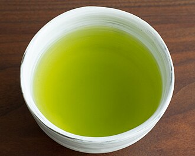

茶の生産量 都道府県ランキング
全8都道府県の順位と荒茶生産量
茶の荒茶生産量が全国で最も多いのは鹿児島県で、3万 tです。全国（7万5,100 t）の40%を占めます。

| 順位 | 都道府県 | 荒茶生産量 | 全国に占める割合 |
|---|---|---|---|
| 1位 | 鹿児島県 | 3万 t | 40% |
| 2位 | 静岡県 | 2万4,100 t | 32% |
| 3位 | 三重県 | 4,860 t | 6.5% |
| 4位 | 宮崎県 | 2,880 t | 3.8% |
| 5位 | 京都府 | 2,280 t | 3.0% |
| 6位 | 福岡県 | 1,850 t | 2.5% |
| 7位 | 熊本県 | 1,140 t | 1.5% |
| 8位 | 埼玉県 | 921 t | 1.2% |
茶の生産量の推移（令和3年産〜令和7年産）
全国の荒茶生産量は、令和3年産の7万8,100 tから令和7年産の7万5,100 tへ、4%減りました。1位は入れ替わっています（令和3年産は静岡県、令和6年産は鹿児島県）。
| 年 | 全国 | 1位 | 2位 | 3位 |
|---|---|---|---|---|
| 令和7年産 | 7万5,100 t | 鹿児島県3万 t | 静岡県2万4,100 t | 三重県4,860 t |
| 令和6年産 | 7万3,900 t | 鹿児島県2万7,000 t | 静岡県2万5,800 t | 三重県5,020 t |
| 令和5年産 | 7万5,200 t | 静岡県2万7,200 t | 鹿児島県2万6,100 t | 三重県5,220 t |
| 令和4年産 | 7万7,200 t | 静岡県2万8,600 t | 鹿児島県2万6,700 t | 三重県5,250 t |
| 令和3年産 | 7万8,100 t | 静岡県2万9,700 t | 鹿児島県2万6,500 t | 三重県5,360 t |
この数字について
- 分類：ツバキ科
- 全国の荒茶生産量：7万5,100 t
- この数字が表すもの：荒茶生産量（生葉を加工した荒茶の重量）
- 調査：作物統計調査 作況調査（茶） 令和7年産
- 8県分を調査（調査していない県は順位に入りません）
茶の生産量について、よくある質問
- 茶の生産量が日本一の都道府県はどこですか？
- 鹿児島県です。作物統計調査 作況調査（茶）（令和7年産）で3万 tでした。
- 茶の生産量ランキング2位・3位はどこですか？
- 2位は静岡県（2万4,100 t）、3位は三重県（4,860 t）です。
- 茶の生産量ランキング4位・5位はどこですか？
- 4位は宮崎県（2,880 t）、5位は京都府（2,280 t）です。茶の全8県の順位は上の表のとおりです。
- 茶の全国の生産量はどれくらいですか？
- 7万5,100 t（令和7年産）です。
米・麦・豆の生産量 ランキング一覧（米・麦・豆の全品目の1〜3位）